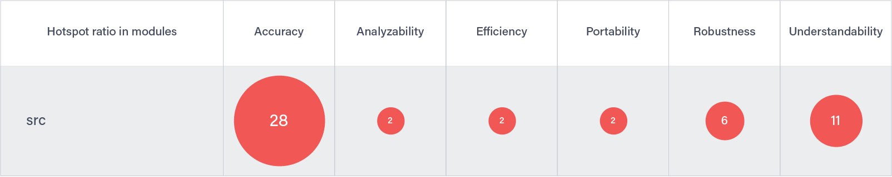
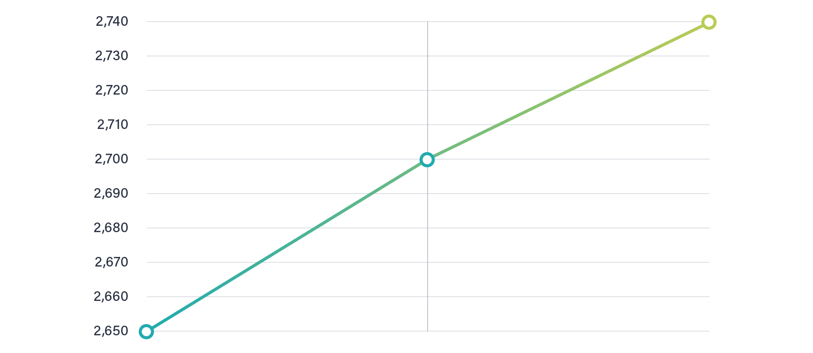

The automotive Industry is about to enter what will be “the smartphone wars 2.0”. Over the next 10 years, the differentiating source of supply and value in the automotive industry will not be car parts or engines. Instead, it will be a network of third-party software applications developed by a web of independent large and small software suppliers integrated into the ‘Car operating system’.
When autonomous vehicles become available at scale, the car will transform from just a mode of transportation into a new-age entertainment hub, with captive consumers surrounded by its technology for an average of at least five hours a week. Embold is used by many automotive producers and about 60% of Tier-1 suppliers. It drives productivity as well as software quality for our customers and will help you as well with your software challenges.
Embold has been used in complex driver assistance projects across the automotive industry. It helped to quickly analyze complex algorithms with high data processing requirements to derive recommendations for improvement.
We have analyzed infotainment systems from almost all major car companies in the world, where we helped to ship high quality software to customers. Systems like infotainment are especially critical because they expose features which are directly consumed by the users.
Embold is the core development platform for a major telematics systems manufacturer. There it ensures that high quality software is shipped to all customers, even if requirements are complex and development cycles challenging.
We helped a major PLM implementation project to assess their software quality and to derive recommendations for improvement. This included architectural recommendations, as well as hints down to the code level.
Embold helps our customers to gain full transparency on the software quality of their suppliers on multiple key performance indicators such as maintainability, robustness and extensibility. For many customers, Embold is even a part of the Supplier Quality Assurance process.
We supported many automotive software projects and tasks forces, both for corporate software and in-car software. This includes Heads-up displays, camera systems, car networking and autonomous driving.
Automative companies use Embold to improve the KPIs important for embedded software engineering. We embrace KPIs like reliability, usability, efficiency, changeability, portability and many more. Embold enables companies to slice and dice the data needed specific for projects and to facilitate the production of variances.
Embold uses a build-interceptor to analyze all the dependencies of embedded software projects. With this detailed analysis, fine granular metrics and specific design anti-patterns can be identified and linked to KPIs. This helps to get “failure in time” rates to levels unreached at very low costs.
Become the best value partner for your oems and internal customers.
Embold enables you to give a quality score and trend to vendors and their teams. By adding a price tag, you can see where you can get the best quality value.

This data is combined by our BI reporting, if available, enabling you to have a strong portfolio view about vendors working for you, to always choose the best value for you.
As a first to improve the quality of your project the hotspots are identified. Embold takes the developer activities as well as the tickets that effected certain components into account to create a risk metric. The Risk metric combined with a high number of code and design issues and bad metrics marks a certain component as hotspots in Embold.
Together with the development teams, those hotspots can be addressed and a refactoring ticket for the next Sprint can be created. The teams normally prioritize those areas that are or will be under active development in the next sprints. By this your repositories and projects will always have a positive trend and your releases rollout like expected.
We are always wating your interestings about embold.
Please don’t hesitate to contact us.